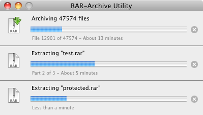

RAR-Archive Utility

Why?
After searching for good OS X RAR tools for some time, and coming up empty, I finally decided to write my own. Since I was a beginner in Cocoa, I first had to learn it a little more before getting into actual coding, but (as you can see :-)) it seems I managed to do it…
Minimalistic, yet powerful
When it comes to archiving tools there was one example that really served as a role model for my application: Apples built-in ZIP Utility. While designing my application, I often looked at what Apple did and tried to copy their behavior. So, while I wanted to give the user all the options that RAR gives them, I still wanted to keep the UI minimalistic and the user interaction required as few as possible.
This is why, for simple extraction and archiving tasks, it’s enough to simply drag the files onto the Application (or double-click them), done. The application even closes itself when it makes sense and selects the extracted files in the Finder.
For more complex tasks, like creating splitted archives, there is an easy-to-use wizard that does all that. But for most users, the wizard won’t even be necessary in their daily life.
Bottom line
So, bottom line? Download the app, try it out. Remember that I actually coded this for personal usage, the idea to actually make it public came long after I started. So for all you coders out there: I’m a Cocoa beginner, excuse the messy code. For all you users: I’m not saying the app is perfect, there might be some bugs still in there (hopefully not), but in my opinion it’s one of the easiest and best RAR utilities out there.
information
What it is
RAR-Archive Utility is an easy-to-use, fast, minimalistic (but still powerful) extractor and archiver for RAR-Files
What you need
Mac OS X 10.6.0 or newer
How to install
Download the newest version below, then copy “build/Release/RAR-Archive Utility” to wherever you like it
Manual
When you download the application, there will be a “README.pdf”, but can also watch the manual online.
License
Published under the GNU General Public License (GPL)
Author / Copyright
Written by Mario Schreiner.
(c) Copyright for all images are with Apple Inc.
Download
Newest version: 2.5.1 beta3
Screenshots
for those loving long texts…
